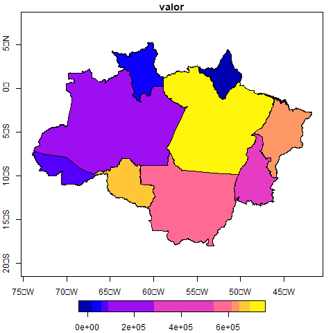

Pecuária e infrações ambientais na Amazônia
Introdução
Diversos estudos nos últimos anos tem buscado investigar causas diretas e indiretas do desmatamento na Amazônia. Alguns artigos evidenciam a forte correlação do desmatamento com a produção de soja e pecuária, por exemplo (Rivero et al. 2009). Atores estatais, empresariais e da sociedade civil têm se mobilizado buscando que essas cadeias produtivas destacadas se desvinculem de um quadro de desmatamento, degradação e outras infrações ambientais (Schmitt 2015).
Este relatório busca, utilizando o R, explorar/visualizar (de forma bastante simples e pouco ambiciosa) alguns dados relacionados ao tema; a partir dessas impressões e visualizações iniciais, podem ser feitas análises mais complexas.
Datazoom Amazônia
O datazoom.amazonia é um pacote do R que busca facilitar o acesso a variadas bases de dados relacionadas à Amazônia brasileira. Ele contempla dados ambientais, sociais e econômicos, passando por temáticas variadas. Buscaremos utilizar aqui os dados relacionados a pecuária e desmatamento.
Pecuária nos estados da Amazônia brasileira

Infrações ambientais aplicadas - IBAMA1
Attaching package: 'dplyr'The following objects are masked from 'package:stats':
filter, lagThe following objects are masked from 'package:base':
intersect, setdiff, setequal, union| Estado | Valor total de multas pagas (1991-2023) | Total de multas aplicadas (1991-2023) |
|---|---|---|
| PA | 190057819 | 79514 |
| MA | 157145765 | 31893 |
| MT | 128417420 | 62600 |
| TO | 83986349 | 57913 |
| RO | 78076525 | 59563 |
| AM | 50669718 | 29125 |
| RR | 18254810 | 13547 |
| AC | 9767054 | 15413 |
| AP | 7876630 | 8560 |
Referências
Rivero, Sérgio, Oriana Almeida, Saulo Ávila, and Wesley Oliveira. 2009. “Pecuária e Desmatamento: Uma Análise Das Principais Causas Diretas Do Desmatamento Na Amazônia.” Nova Economia 19 (1): 41–66. https://doi.org/10.1590/S0103-63512009000100003.
Schmitt, Jair. 2015. “Crime Sem Castigo : A Efetividade Da Fiscalização Ambiental Para o Controle Do Desmatamento Ilegal Na Amazônia,” September. https://doi.org/10.26512/2015.05.T.19914.